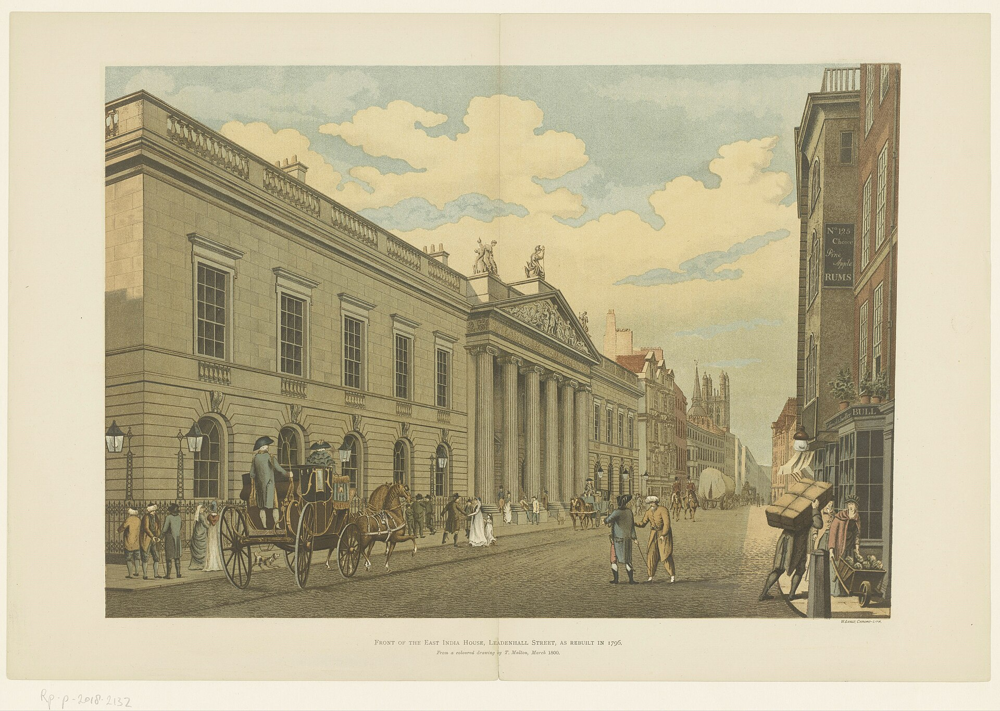
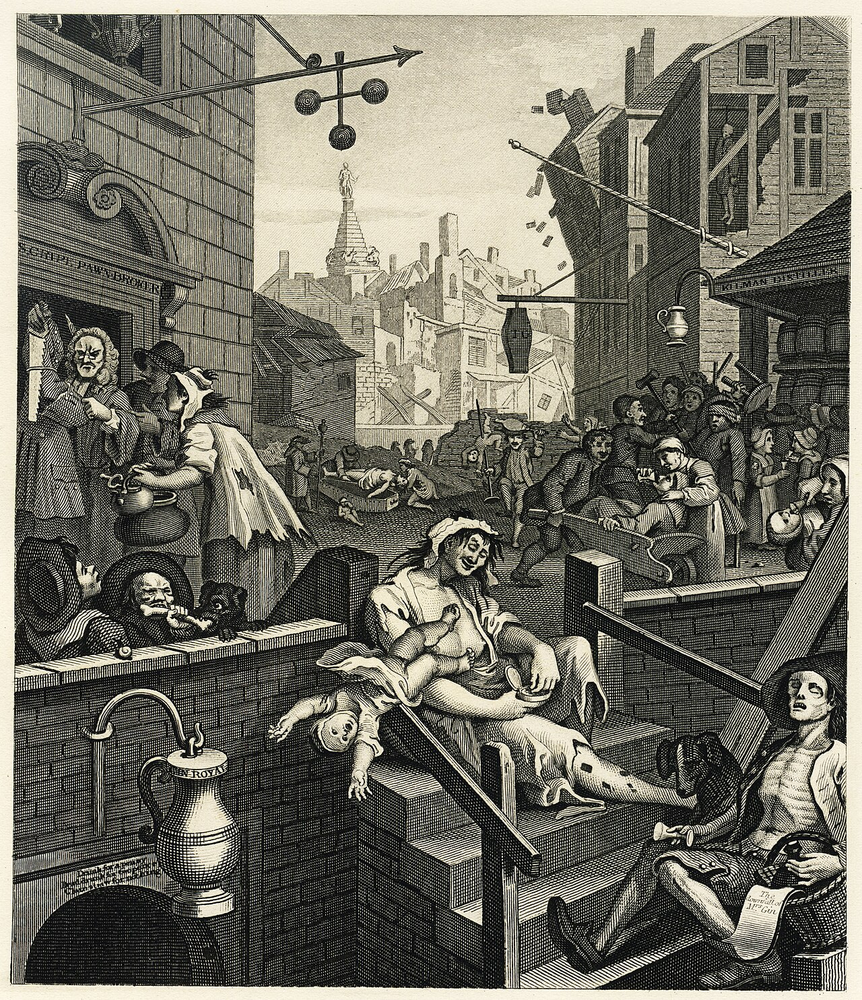
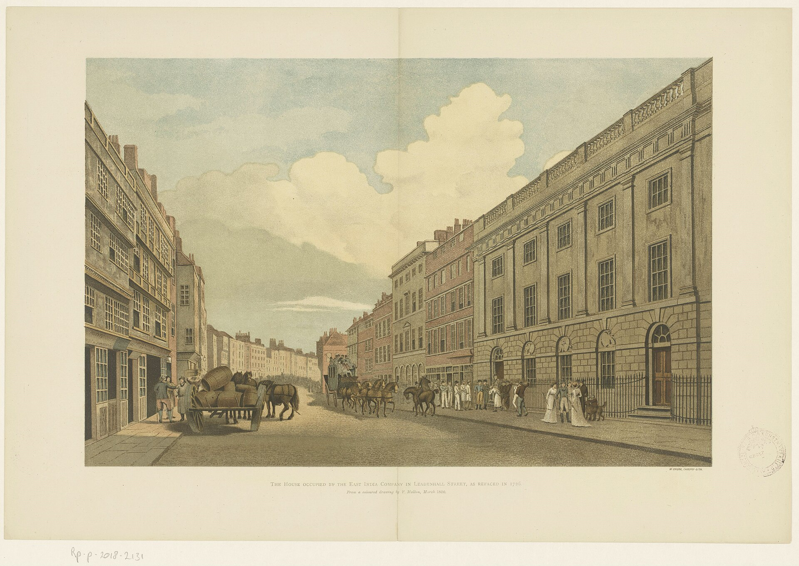

Chapter Nine
1858
"The Company is dead. Long live the machine that wore its name."
— Parliamentary sketch-writer, London, 1858
1858: What Harding Would Not Say

Chapter Sections
I. The Ending Smell
The newspapers have been full of it for months, and by August 1858 it's finally happening: an Act of Parliament, a signature, and two hundred and fifty-eight years of the most powerful trading company the world has built stops on paper. The India Bill. The dissolution. Territories, armies, revenues, the whole apparatus, handed from a corporation with shareholders to a government with subjects. Most of Wapping doesn't much care how a company ends. It cares that ships are still coming up the river, and that some of the men getting off them don't look like they're coming home from a business trip.
The bar is half full on a Thursday that should be loud and isn't. The men who drink here are Company men, or know Company men, and the Company is dying, and when something that big dies, the men who orbit it lose their orbit. They drift. They drink alone. Nobody much wants to be in the clubhouse when the walls come down.
Two dockworkers at the end of the bar are having, for what must be the hundredth time, the argument about whether the new steamers will put the sailing ships out of business inside ten years or twenty. Neither of them will live to find out who's right, and both are certain anyway.
II. Gin

He comes in after dark, and the bar goes quiet — not the quiet of someone loud walking in, the other kind, the kind that comes from a man carrying silence in like a disease.
A captain. Shows in the cut of him, the sun-darkened face, the eyes that aren't looking at anything in this room — they're looking at somewhere else entirely, somewhere hot and far away, and have been for long enough to forget how to look at anything closer.
Gin, he says. One word, flat, like a stone dropped down a well. Hannah pours it. He holds it in both hands and doesn't drink — just holds it, the way a drowning man holds a rope he isn't using yet.
A man at the far end tries him. Back from India, then? Heard about the mutiny — terrible business, glad you made it back. The captain turns his head just enough to show his profile, and whatever's in it ends the conversation before it starts.
He stays two hours. Four gins. Doesn't speak again, doesn't look at the river. Leaves the way he came, and the bar exhales when the door shuts behind him, the way a room exhales when a coffin's been carried out.
Gin is having its year, as it happens. Later that same week a subaltern not ten days off the trooper — young, sun-scorched, one arm still stiff in its sleeve — asks Hannah for gin and tonic water. Indian tonic, he says, hopeful. The new bottled sort.
Hannah has never heard of it. He explains, apologetic, the way men explain a home they are not sure they're allowed to be homesick for: quinine water, against the fever — some chemist has just patented it, fizzing, in bottles — and in the mess at a place the newspapers have taught everyone to flinch at, they drank it every dusk with gin and a knife of lime, on the surgeon's orders, and it tastes of England and medicine in equal parts, and he has been dreaming of it, he says, since Calcutta.
Plain gin tonight, Hannah says, gently, and lime when the lime comes. And she writes tonic water on the slate she keeps for the brewery man, under candles and pipe-clay — and that is how the drink of the next century enters this house: as a homesick boy's request, and four words of chalk.
The bottles come in three weeks later, because Hannah is not a woman who chalks a thing twice. The subaltern gets the first of them, stood by the house — gin, tonic, and a knife of lime, in a pewter tankard, the house never having owned a glass worth the name. He drinks it at the window with his stiff arm resting on the sill and goes quiet in the particular way of a man tasting a place he isn't in, and when he leaves, Hannah writes nothing on any slate at all, because some transactions are not for the books.
The Company dies this August. Its drink is only now being born. They pass each other at the door, and nobody in the room remarks on it, because it is not the kind of thing that looks like history while it is happening.
III. The Story
He comes back the next afternoon — Harding, though nobody's learned the name yet — and this time there's a young man waiting with a notebook. Twenty-four, twenty-five, cheap neat clothes, ink on his fingers, ordering a shandy, which tells you everything about him worth knowing.
I'm from the Times, he announces to the room. Covering the dissolution. Looking for anyone with Company connections.
Nobody answers. He tries Hannah — you must have stories, a bar this close to the docks.
I pour drinks, she says. I don't collect stories.
He writes something down anyway. Probably not what she said.
He has better luck, briefly, with a young Company surgeon two tables over — sun-browned, barely thirty, home between postings, with the steadiness of a man nothing has yet managed to reach. Bengal, the surgeon agrees, pleasantly. Two years. And when the journalist asks what he saw there, in the year everyone saw something, the young man considers the question the way you'd consider an interesting specimen. A surgeon sees what a war needs him to see, he says, in the tone of a man giving his name, and orders brandy — gin, he observes, being for patients — and drinks it slowly, watching the room with a mild, cataloguing attention, and offers nothing further at all.
The journalist writes down calm. It is the right word, and he will never know how right. The surgeon's name is Cray. He will drift back through this room, off and on, for thirty years, and the house will get used to him. Houses do.
IV. The Mouth of the Cannon
Harding takes his usual stool that evening, and this time the journalist doesn't leave him alone — three stools down, close enough, far enough. Captain. I'm with the Times. I'd like to talk, if you're willing.
Nothing. The gin gets drunk and refilled, drunk and refilled. Then, with no warning at all —
Cawnpore.
One word, said the way you'd name a disease you survived. The pencil stops. The bar goes still.
They killed them all, Harding says. The women and children. Held for weeks in a house with a courtyard. Nana Sahib in charge, or said he was. The sepoys had reasons — nobody here wants to hear that part, but they did. The cartridges. The annexations. The Company taking their kingdoms one by one like furniture out of a room. They had reasons. But the women and children didn't grease any cartridges, and they killed them all the same.
He drinks. Doesn't wince.
We got there after, with the relief column. Walked into that courtyard. The bodies had gone in the well — some of them alive still, when they went in. You could smell it before you saw it. A sweet, thick smell. We stood there in the sun and looked into that well and —
He stops. His knuckles go white on the glass. The journalist isn't writing anymore.
Then we did it back, Harding says, quieter now. Devil's Wind, the sepoys called it — the wind off the cannon mouth. Tied the prisoners to the muzzles and fired, and the bodies came apart in pieces. I didn't give the order. I was there. I didn't stop it, because by then the men doing it weren't men anymore, they were the thing a man becomes after he's looked into a well full of children, and I watched, and I didn't stop it.
How many, the journalist manages. At the cannons.
Harding looks at him properly for the first time, and whatever the boy sees in that look, he doesn't pick his pencil back up for a long while. Hundreds. Maybe more. Hanged from the trees along the road too, lines of them, visible a mile off. It wasn't anger by then. Anger has a direction. This didn't. This was just weather, and everyone under it grabbing and destroying because there was nothing else left to do, and the well was full, and the well was full, and the well was full.
Hannah pours him another without being asked, and sets it down gentle, and doesn't say anything, because there's nothing to say — only the pouring, which says I see you and I cannot help you well enough on its own.
V. The Citation
He isn't gone an hour before someone else walks in who's clearly heard the same conversation secondhand and travelled a good deal faster than good sense to get here — a colonel, older than Harding, greyer, a chest of ribbons that says he'd already earned his name a long time before Cawnpore gave the country a new word to be sick about. Harding knows him. Served under him, briefly, on the relief column itself.
Sir, Harding says. Flat. Neither surprised nor pleased.
The colonel doesn't sit. Word travels fast in a town this size, Captain, even to a public house in Wapping. I'm told you've been talking to a journalist. In a room full of strangers.
I've been answering his questions, sir.
The journalist, three stools down, goes very still, pencil held but not moving, doing what every good newspaperman does in a moment like this, which is nothing at all that might make anyone stop.
There's a Distinguished Service Order in the pipeline for the officers who served at the relief, the colonel says, to Harding, though every word of it is pitched to carry. Yours among them. A majority to follow within the year, I'd expect, given the gaps that need filling.
Harding says nothing. He has learned, this past year, exactly how much silence a man can produce when he needs to.
There is a version of the relief of Cawnpore this country needs to hear, the colonel goes on. Sepoy butchery. British soldiers arriving too late to save the innocent, in time only to exact a measured justice. That version is in every paper in England already, and it happens to be substantially true. The well is news, Captain; the guns are administration. The one is for printing, the other is for filing. What serves nobody — least of all the men who served with you, Captain — is a word like Devil's Wind spoken in a bar by an officer whose name will end up in the same paper that prints his citation.
You want me to leave out the cannons, Harding says.
I want you to remember that a report and a confession aren't the same document, and only one of them is anyone's business but your own. Take the DSO. Take the majority. Let the country have the version it can live with. You've earned the quiet life that comes after this; don't spend it telling strangers in bars the parts that don't fit the citation.
Harding is quiet long enough that the colonel allows himself, for a moment, something like reassurance — the look of a man who believes the matter is nearly settled.
Then Harding says, loud enough this time that nobody in the room has to strain for it: How many men did we tie to those guns, sir? You were there. You know the number I gave this young man wasn't invented for effect.
The colonel's face doesn't move, though something behind it does. That number appears in no report I have signed, Captain, and it will not appear in yours either, if you'd still like to be wearing a uniform this time next year.
Then I expect I'll be wearing this one a good deal longer than that, Harding says. Quietly. Not a challenge. Just an answer, the kind a man gives once he's worked out what it costs and decided he can afford it, or decided he can't afford the alternative, which comes to the same thing by the end.
The colonel looks round the room once — the journalist, very obviously not writing; Hannah, very obviously not listening; a handful of regulars doing an excellent impression of men absorbed entirely in their own drinks — and seems to measure, in that one glance, exactly how much damage has already been done and how little more a scene would repair. He straightens his coat.
That's your choice to make, Captain, he says, and something almost like respect moves under the words before it's put away again. I'll say you were unwell today. Buys you a week, perhaps, before someone else asks.
He leaves. Harding sits with his gin — DSO and majority both still notionally his for the taking, for now — and doesn't touch either subject again. The journalist's pencil starts moving once more the moment the door shuts, faster than before.
VI. Ten Point Five

He arrives like a man arriving at his own birthday party. Seventy or more, gold buttons, shoes polished to blind a man at thirty paces. The bar makes room for him the way rooms make room for money without quite deciding to.
A Company shareholder — decades of it, dividends the whole way. He's heard Harding's account by now; everyone has. His face doesn't move while he listens. He learned long ago that expressions are for people who can't afford to be still.
Terrible business, he says, to the room in general. But you must understand — the Company was governing two hundred million people with a private army. That takes roads, railways, telegraphs, courts, a civil service running in two languages. Built from nothing. From a few trading posts and a charter.
He drinks his whiskey.
People talk about the Company like a monster. It was shareholders. Clergyman's widows. Retired officers. The safest investment in England, and for two hundred years it paid — through wars, through famines, through this. And now they've dissolved it, and do you know what Parliament's agreed? Ten and a half percent. Guaranteed, for forty years. Paid for by the Indian taxpayer. Same revenue, same people paying it — just routed through the Treasury now instead of Leadenhall Street.
He says it with no irony at all. It's simply how the world is arranged. India has always paid. It will keep paying. Only the name on the cheque changes.
VII. The Story Finds Its Shape
The journalist can't help himself — the story's too close now. Sir — the government's guaranteeing your dividends. Paid for by Indian taxes.
That is correct, the shareholder says. The shareholders had a legitimate expectation of return. You cannot simply seize a man's—
It's not property, it's a dividend, paid by people who never agreed to pay it. The sepoys mutinied because the Company was taking everything they had.
The sepoys mutinied over cartridge grease, the shareholder says, calm, well-rehearsed. That was never really the issue, and you know it. The issue was an army turning on its employers, and the result was a massacre, and the response was severe because the provocation was severe. You cannot burn down a system and complain when the fire spreads.
Parliament put the system on trial once, the journalist says. Hastings. Seven years in Westminster Hall.
And acquitted him, the shareholder says, without a flicker. On every charge. Mr. Burke spent his genius, the Lords spent their patience, the Company paid the defence, and the verdict was innocent. The system examined itself with the greatest thoroughness in legal history and found itself blameless. I'd have thought a newspaperman would draw the obvious lesson about who holds the scales.
Harding says nothing. He's gone somewhere that belongs to him and the well and the trees.
A hundred years of governance, the shareholder continues, unstoppable now. Plassey to the mutiny, exactly a century. Railways. Telegraphs. English as a common tongue across a subcontinent that had dozens. It went there to trade. The governing came after, because someone had to, and there was no one else.
The journalist's pencil is moving fast enough to catch fire. The Company dies. The Crown takes over. The shareholders keep the money. The machine keeps running under a different name.
And the Indian people, he says slowly, get what, exactly?
Better governance. Direct rule from Westminster is more accountable than a—
Accountable to whom? They don't vote. Don't sit in Parliament. Governed by a corporation yesterday, a queen tomorrow. Only the plaque on the door changes.
The shareholder sets his glass down with a click that sounds final. You're young, he says, and for a second something under the certainty shows — not doubt, something smaller, closer to tiredness. You want a simple story. Good men, bad men. The Company was neither. It did what companies do. It built things, and in the building of them it destroyed things, and the things it destroyed were people, and the things it built are still standing. That is the whole story. Everything else is moralising after the fact.
He puts on his hat, looks once at Harding the way a man looks at a mirror he'd rather not, and walks out. The bar is quieter without him — strange, since he was never loud. It's the certainty that's loud, and now it's gone.
VIII. The Machine Remembers
They're all gone now — Harding first, gin still standing untouched and going flat; the journalist next, already composing his headline; the shareholder before that, gold buttons and all. Hannah wipes the counter with the slow, unseeing motion of a woman whose hands are working while her mind does something else.
The dissolution is not an ending. It's a rebranding. The machine the Company built has no loyalty to the Company — it was built for extraction and control, and nothing in tonight's Act touches either. Tonight the name on the paperwork is East India Company. By every account in this room, within the year it will be the Crown. The name changes. The function, everyone here already seems to understand, does not.
Harding's words don't leave with him. Cawnpore, the well, the Devil's Wind — they settle into the wood and the gaslight the way the river settles into its banks, and they do not clean off.
The shareholder wasn't wrong about the facts. Railways, telegraphs, law — all real. But the facts were never the whole of it. The whole of it was who paid and who collected, and who sat warm in London on dividends drawn from people who would never see a mile of the railway built with their own taxes.
Outside, the river carried the first Company ships two hundred and fifty-eight years ago. It will carry the Crown's ships tomorrow. It has never once cared whose flag was on them.
The last tankard of the night goes on the shelf. The Company is ending. The ale is not. The bar has outlasted one empire tonight, quietly, without anyone in it quite noticing it happen.